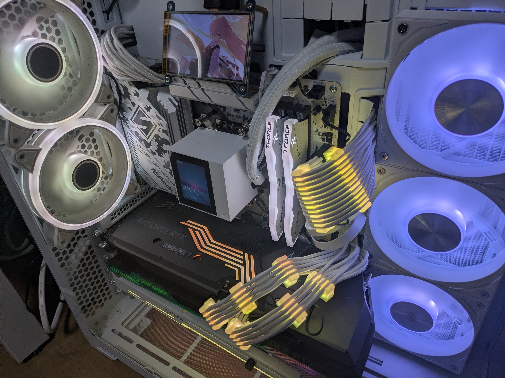
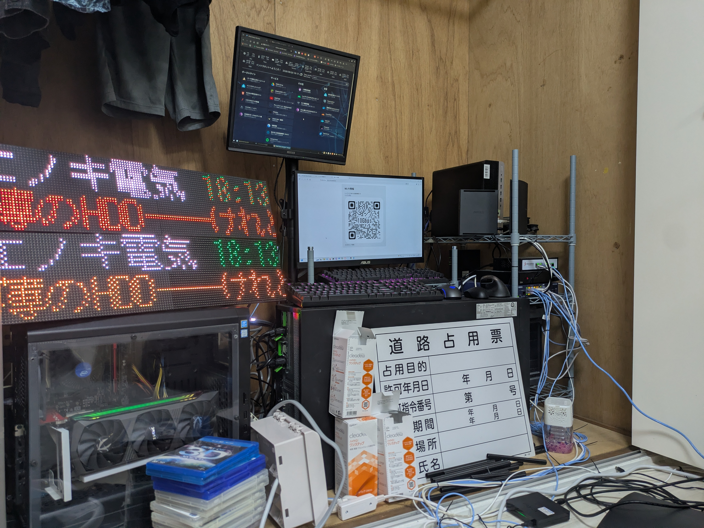
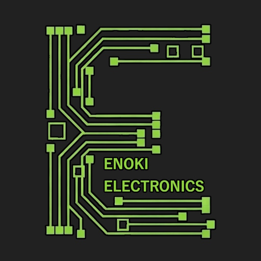
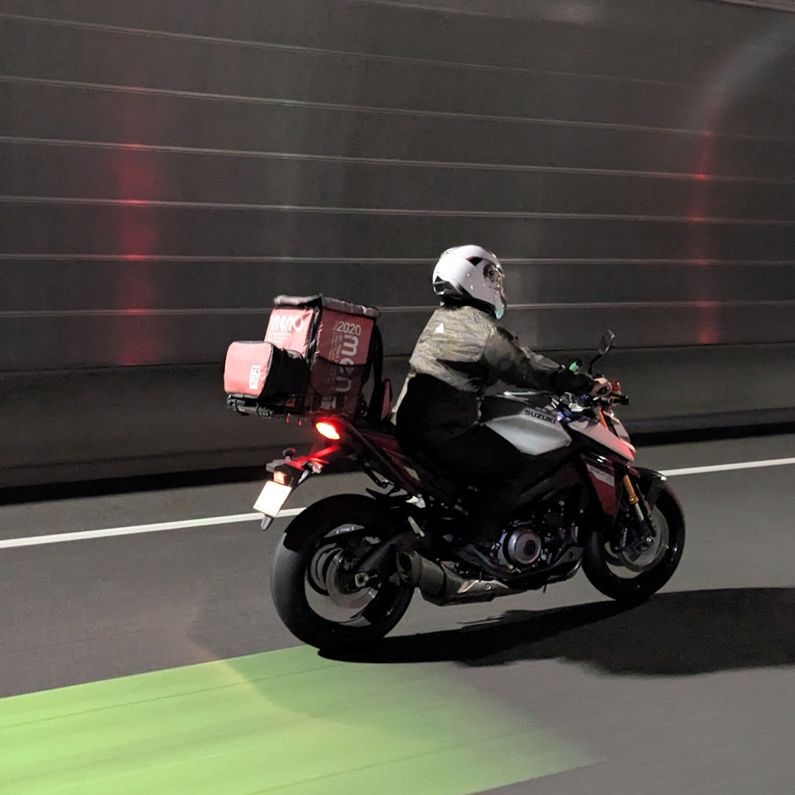
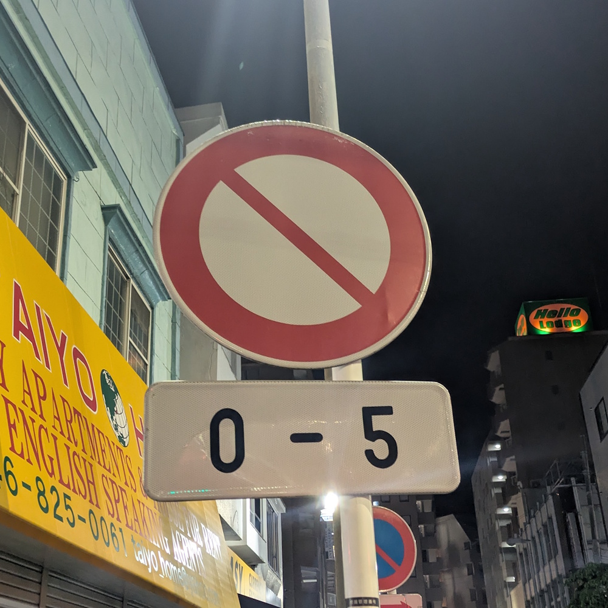
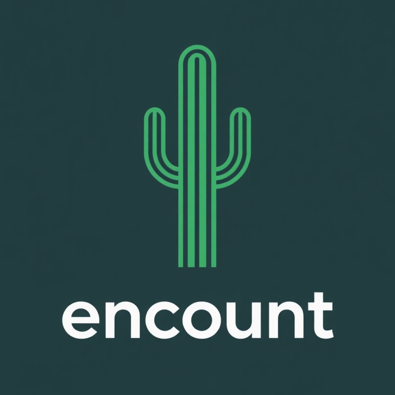

現在のオンエア & タイムライン
これからの放送予定（現在時刻から自動計算しています）
Lo-Fi専用チャンネル
配信URL
ねるるラジオは、通常のインターネット配信に加えて、検閲地域向けにダークウェブ上でも配信されています。
どちらのURLからでも、24時間いつでもお聴きいただけます。
通常URL：https://radio.enoki.xyz/public/neruru-radio
ダークウェブURL：http://radioenoki.onion/public/neruru-radio
ねるるラジオとは？

ねるるラジオは、インターネットを通じて24時間いつでも聴くことができる、完全オリジナルのラジオ放送局です。
最新のテックガジェット情報から眠れない夜にそっと耳を傾けたくなる癒やしのトークまで、幅広いジャンルの番組を定時配信しています。作業用BGMとして、またはベッドに入って眠りにつくまでのひとときに、極上の音声体験をお届けします。
番組一覧
ねるるラジオで毎日放送されている個性豊かな番組ラインナップです。
🎶 ねるるミュージックアカデミー
放送時間：毎時00分（各11分間）
音楽理論や打ち込み楽曲の極意について、初心者でもわかりやすく解説する音楽学習番組。音楽制作に興味がある方は必聴です。
🌙 ねるるの眠れない話
放送時間：23:00～翌4:00の毎時15分（各11分間）
どうしても目が冴えて眠れない夜、あなたにそっと語りかけるおやすみ前専用トーク。ナビゲーターの「ねるる」が、心温まるエピソードや不思議な昔話を静かにお話しします。
☀ オハラジオ
放送時間：5:00～10:00の毎時15分（各11分間）
さわやかな朝のスタートを応援する朝活応援番組。今日のお天気や一日の運勢、元気が湧いてくるポジティブな音楽とトークをお届けします。
🥜 サボさんの千葉来ません？
放送時間：11:00～23:00の毎時15分（各11分間）
千葉を愛し、千葉に愛された男「サボさん」が、千葉県の隠れた名所や絶品グルメ、ローカルな魅力を熱く語り尽くす観光勝手に応援バラエティ。
📰 ネルラジニュース
放送時間：毎時30分（各11分間）
1時間に1回、世の中の動きをコンパクトにまとめた11分。これさえ聴いておけば、忙しいあなたも社会のトレンドに遅れることはありません。
🔌 ガジェットマニア
放送時間：毎時45分（各11分間）
最新のスマートフォン、PC周りの周辺機器、自作PCパーツから便利な家電まで、ガジェットを愛するすべての人のための、愛と物欲に溢れた11分間。
🎶 ときえのき製作楽曲配信（CMあり）
放送時間：5:00～23:00の放送休止時間帯
番組と番組の間には、このラジオのプログラム製作者であるときえのき（エノキ電気）のオリジナル楽曲を配信しています。
時々使用許諾を頂いている他者制作の楽曲や、AI生成楽曲も流れることがあります。合間に自動でスポンサーCMを挟み込みます。
🎶 チル・ミュージック（CMなし）
放送時間：23:00～翌朝5:00の放送休止時間帯
深夜の番組と番組の間は、気が付いたら眠くなって寝てしまうチルなミュージックをお届けいたします。
このラジオの配信の仕組み

ねるるラジオは、最先端のオートメーションプログラムによって完全自動で24時間配信されています。
バックグラウンドでは、PHPとAzuracastで構築された独自のスケジューラプログラムが常時稼働。番組はGeminiによって自動で台本が書かれており、バッチ処理を駆使してVOICEBOXに読み上げさせています。
このプログラムのソースコードは、こちらのリンクから無料でダウンロードすることができます。
また、各定時番組が設定されていない「隙間時間」には、このプログラムの開発者であるときえのき（エノキ電気）の楽曲、もしくは入眠に最適なチル・ミュージックが流れています。
- 5:00～23:00の間：ときえのきオリジナル楽曲（合間に自動でスポンサーCMを挟み込み）
- 23:00～翌5:00の間：著作権フリーの眠くなるLo-Fi楽曲（ノンストップ・CMなし）
スポンサー一覧
⚡ エノキ電気

「自由を、デザインする」
埼玉出身の自営業。このラジオのプログラム開発者。システムエンジニア&作曲家&配達員の三刀流で、独特すぎる手法で自由をデザインする。番組が実施されていない昼の時間帯には、彼の楽曲が配信されている。
📻 ねるる

「デザインの事なら、お任せください」
大阪出身。このラジオの考案者。最初はネタでラジオ配信をやろうと持ち掛けてきたが、なんか気が付いたらちゃんとした番組とかが配信されるようになっていて困惑している。
💤 夜勤対策委員会

「夜更かしをやめて、健康な生活をしよう」
快適な睡眠環境を追求する架空のライフスタイルブランド。オリジナル快眠枕やアロマオイルの開発、そして本ラジオのスポンサーでもあります。
🌵 株式会社エンカウント

「エンカは善なんよ」
千葉発祥の新興企業。インターネットを通じて人と人を繋ぐ「エンカウント」を理念に、幅広い事業を手掛ける。
🌎 全日本ダークウェブ普及協会
「Onionでええやん」
日本国内におけるダークウェブ普及を目標にしている団体。検閲地域で日本語のラジオを流すという変態的な趣味を世界に見せつけている。
お問い合わせ
ねるるラジオへのご意見、ご感想、番組へのお便りやスポンサー契約に関するお問い合わせは、以下のメールアドレス、またはフォームよりご連絡ください。
📩 メール： info@enoki.xyz